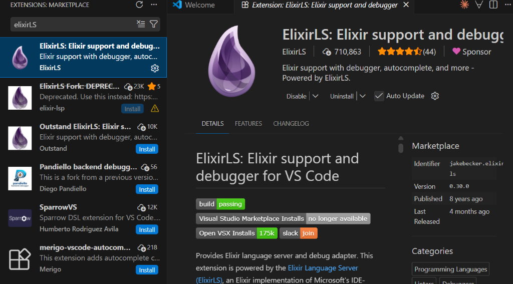
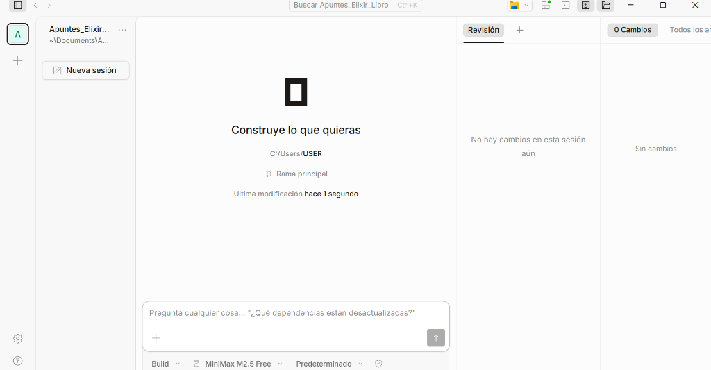
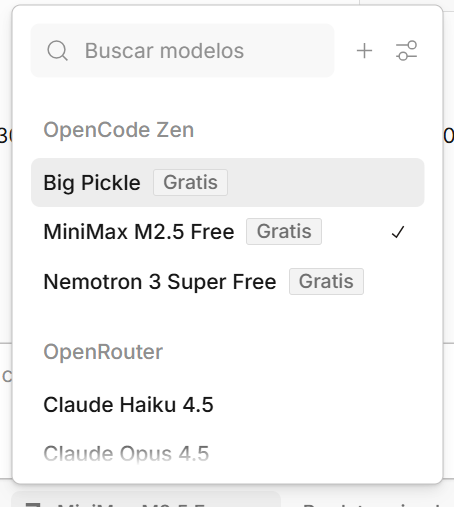
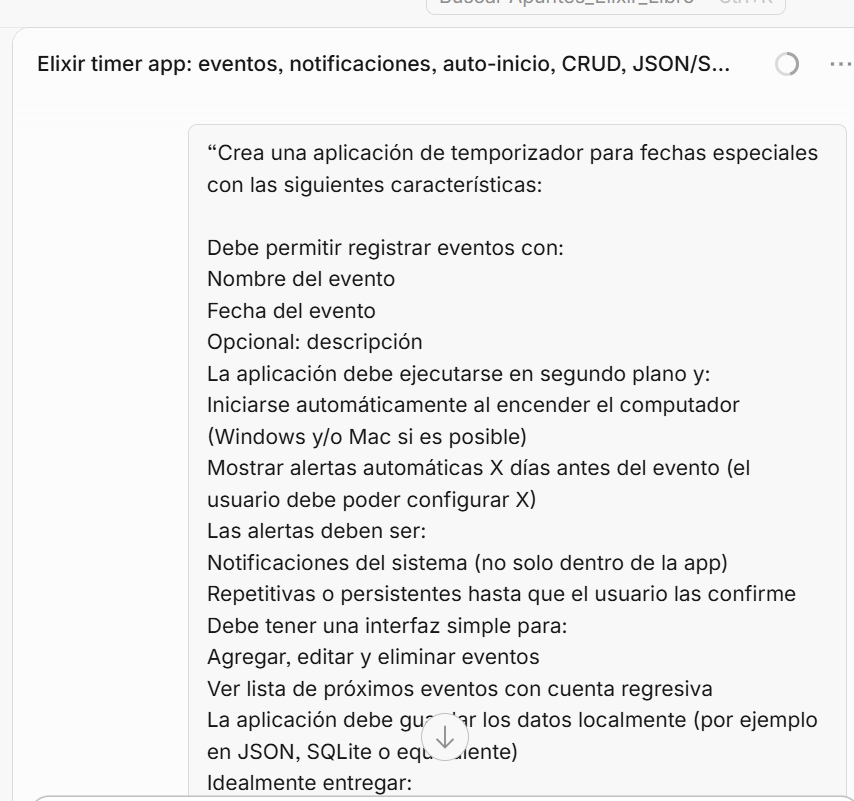
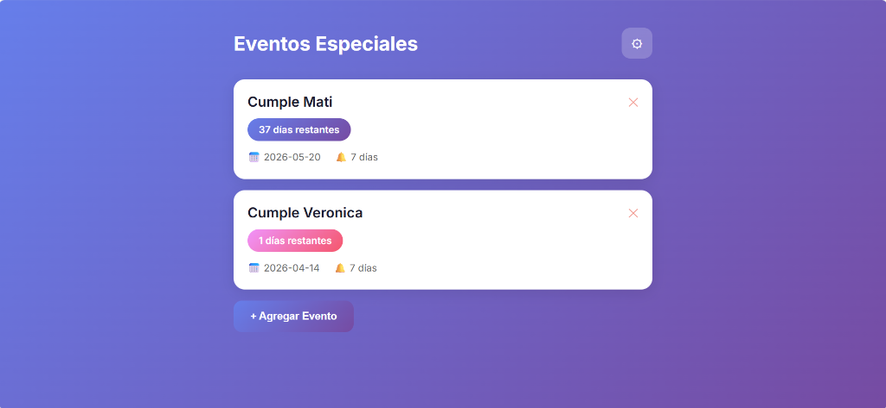

Configurar VSCode con Elixir y OpenCode
Este capítulo explica cómo dejar listo tu entorno para trabajar con Elixir y usar agentes de IA.
Requisitos Previos
Antes de comenzar, asegúrate de tener:
-
Visual Studio Code instalado.
-
Una terminal disponible (PowerShell en Windows, bash/zsh en Linux).
-
Conexión a internet para descargar los paquetes.
Erlang/OTP
|
Erlang debe instalarse antes que Elixir. Sin la BEAM (la máquina virtual de Erlang), Elixir no puede ejecutarse. |
Windows
Puedes usar winget (incluido en Windows 10/11):
winget install Erlang.OTPTambién puedes descargar el instalador manualmente desde erlang.org/downloads.
Elixir
Windows
Con winget:
winget install ElixirLang.ElixirO descarga el instalador desde elixir-lang.org.
Verificar instalación
erl -version (1)
elixir --version (2)| 1 | Muestra la versión de Erlang/OTP instalada. |
| 2 | Muestra la versión de Elixir y confirma que detecta la BEAM. |
Deberías ver algo como:
Erlang/OTP 27 [erts-15.x]
Elixir 1.18.x (compiled with Erlang/OTP 27)|
Prueba el shell interactivo con |
Configuración de VS Code
Extensiones recomendadas
Abre VSCode y ve a la pestaña de extensiones (Ctrl+Shift+X). Busca e instala:
ElixirLS

Es la pieza fundamental. Proporciona autocompletado, diagnóstico de errores y formateo automático.
Búscala como ElixirLS en el marketplace o instálala desde la terminal:
code --install-extension JakeBecker.elixir-lsLivebook (opcional)
Si quieres usar Livebook (notebooks interactivos para Elixir,
similar a Jupyter), esta extensión te permite abrir archivos .livemd directamente
en VSCode.
code --install-extension livebook.vscode-livebookIA en el Editor (Extensiones)
Para muchos desarrolladores, la forma más cómoda de usar IA es directamente dentro del editor. Aquí tienes las mejores opciones para VS Code:
1. OpenCode
Ya que usaremos la aplicación de escritorio más adelante, puedes instalar su extensión para VS Code. Te proporciona un chat lateral y autocompletado en tus archivos .ex y .exs, compartiendo la misma configuración.
code --install-extension anomalyco.opencode2. Continue (Modelos Locales)
Continue es una extensión open source muy potente. Es ideal si planeas usar Ollama para tener autocompletado gratuito y completamente privado en tu propia máquina, sin que tu código salga de tu computador.
code --install-extension Continue.continueOpenCode desktop
Es un agente de código que te ayuda a escribir y depurar código desde una interfaz gráfica o terminal.
Características
-
Multi-Proveedor: Compatible con más de 75 proveedores de LLM.
-
Aplicación de escritorio: Interfaz gráfica con chat, revisión de cambios y navegación de archivos.
-
Integración LSP: Carga automáticamente los Language Servers (como ElixirLS) para darle contexto al modelo.
-
Multi-sesión: Puedes tener múltiples agentes trabajando en paralelo sobre el mismo proyecto.
-
GitHub Copilot: Puedes iniciar sesión con tu cuenta de GitHub para usar tu plan de Copilot.
-
Privacidad: OpenCode no almacena tu código ni datos de contexto.
|
Opinión Personal: OpenCode es como Google Antigravity pero con más opciones de configuración y modelos disponibles, además de ser open source. |
Instalación
Windows
Descarga el instalador directamente desde la web oficial:
-
Ve a opencode.ai/download
-
Descarga el instalador para Windows (x64)
-
Ejecuta el archivo
.exey sigue las instrucciones
También puedes instalar la versión de línea de comandos con:
choco install opencodeLinux
Instalación en Linux (click para expandir)
Descarga el paquete .deb o .rpm desde opencode.ai/download,
o instala la versión de línea de comandos:
brew install anomalyco/tap/opencodecurl -fsSL https://opencode.ai/install | bashsudo pacman -S opencodeConfiguración
|
La forma más rápida de configurar OpenCode es usar el comando |
Configuración manual
OpenCode usa un archivo opencode.json que se puede colocar en:
-
La raíz de tu proyecto (configuración local)
-
$HOME/.config/opencode/opencode.json(configuración global)
Ejemplo para usar con Anthropic:
{
"providers": {
"anthropic": {
"apiKey": "tu-api-key-aqui", (1)
"disabled": false
}
},
"lsp": {
"elixir": {
"command": "elixir-ls" (2)
}
}
}| 1 | Reemplaza con tu API key real. Nunca la subas a un repositorio público. |
| 2 | Conecta ElixirLS para que el agente entienda tu código Elixir. |
|
Las API keys también se pueden configurar como variables de entorno:
Si tienes GitHub Copilot, puedes iniciar sesión directamente desde OpenCode sin necesidad de configurar API keys adicionales. |
Uso básico

Al abrir OpenCode en tu proyecto de Elixir, verás una interfaz de chat donde puedes:
-
Escribir preguntas sobre tu código
-
Pedir que genere funciones en Elixir
-
Solicitar depuración de errores
-
Cambiar entre modo Build (hace cambios) y Plan (solo sugiere) usando la tecla
Tab
Crea una función que calcule el factorial de un número usando recursión en ElixirOpenCode generará algo como:
defmodule Matematica do
@doc """
Calcula el factorial de un número entero no negativo.
## Ejemplos
iex> Matematica.factorial(5)
120
iex> Matematica.factorial(0)
1
"""
def factorial(0), do: 1
def factorial(n) when n > 0 do
n * factorial(n - 1)
end
endOpciones Gratuitas
OpenCode permite usar varios modelos de calidad sin costo a través de su servicio Zen o corriendo modelos localmente.
Modelos de OpenCode Zen

Dentro de la aplicación, en el selector de modelos, encontrarás varias opciones gratuitas:
| Modelo | Punto Fuerte | Uso Ideal |
|---|---|---|
Big Pickle |
Versatilidad general |
Tareas variadas, exploración de código |
MiniMax M2.5 Free |
Equilibrio velocidad/calidad |
Programación diaria, refactorización |
Para usarlos, solo tienes que seleccionarlos en el menú desplegable de modelos dentro de OpenCode.
Ollama (modelos locales)
Si prefieres no depender de servicios en la nube, puedes instalar Ollama y ejecutar modelos directamente en tu computador. Es completamente gratuito y privado, aunque requiere hardware con buena capacidad de procesamiento (mínimo 16GB de RAM recomendados).
ollama pull llama3.2 (1)
# OpenCode se conecta automáticamente al endpoint local (2)| 1 | Descarga el modelo Llama 3.2 (~4GB). Solo necesitas hacerlo una vez. |
| 2 | OpenCode detecta Ollama en localhost:11434 sin configuración adicional. |
|
Para un comparativo detallado de modelos locales (Ollama, LMStudio, Pinokio) y cuándo conviene usarlos vs. servicios en la nube, consulta el capítulo Introducción a la Programación Agéntica. |
Caso de Uso: Construyendo un Temporizador con OpenCode
Ahora que tenemos nuestro entorno listo, usaremos OpenCode para crear una aplicación funcional en Elixir. En vez de un simple "Hola Mundo", construiremos un temporizador de eventos especiales.
El Prompt Inicial
La ventaja de usar agentes es que podemos describir la lógica compleja que necesitamos antes de escribir código. Ingresamos las siguientes instrucciones en OpenCode:

Como se observa, solicitamos una app que anote fechas, persista los datos, corra en segundo plano, y cuente con una interfaz para administrar (CRUD) los eventos mostrando notificaciones del sistema.
El Resultado
OpenCode genera el proyecto completo (equivalente a mix new event_timer), configura las dependencias y estructura la lógica en segundo plano.

La aplicación final resultante incluye una interfaz clara donde podemos ver los eventos próximos, la cuenta regresiva, y gestionar las fechas importantes.
|
¿Quieres explorar el código y probarlo?
Para no saturar este artículo, hemos habilitado la carpeta Puedes encontrar todo el código funcional de esta aplicación en: |